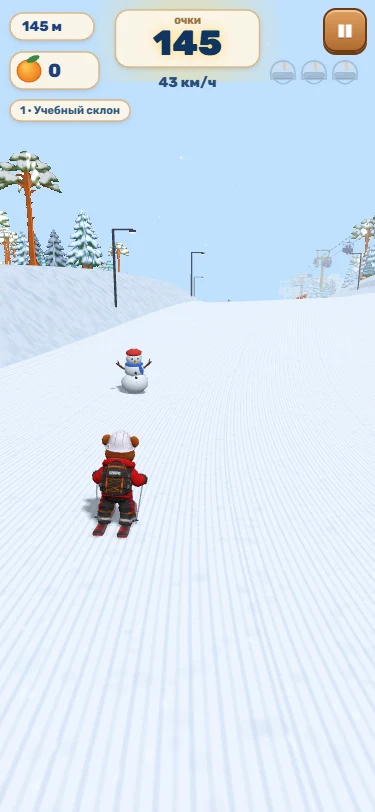

Учебный склон
Выбери Мишаню или Сову и нажми «Поехали». На трассе № 1911 первая плюшка выезжает слева. Справа мандаринки ведут в объезд.


Посмотреть на трассе
Ссылки открывают игру на паузе. Можно сменить героя, сдвинуться поперёк склона и поехать с выбранного места.
